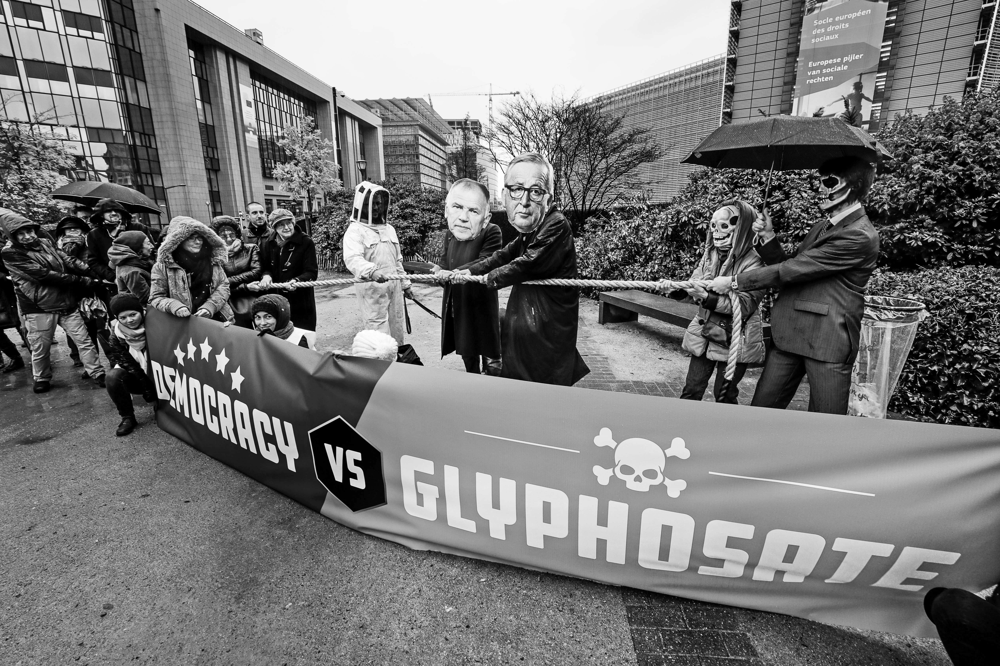
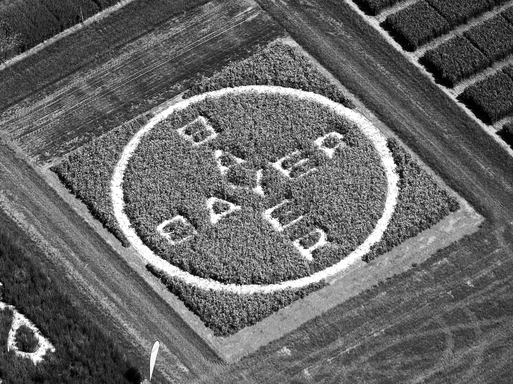

Le glyphosate est la substance active d’un herbicide mondialement connu et breveté par la firme d’origine états-unienne Monsanto, désormais propriété de Bayer : le Roundup. La molécule est l’objet d’une controverse d’ampleur mondiale, à la fois technique et réglementaire, qui entremêle plusieurs enjeux : ses effets cancérogènes, sa présence dans le métabolisme humain et les nappes phréatiques, le symbole qu’elle incarne. Emblème de l’agriculture intensive qui déclare « nourrir le mondeSur son site, Bayer France écrit que l’agriculture ne pourra nourrir un monde demain encore plus peuplé sans augmenter substantiellement sa production et perpétuer un modèle reposant sur l’utilisation massive d’herbicides. », le glyphosate est un élément clé du système économique hérité des Trente Glorieuses. À partir de l’analyse des « verrouillages socio-techniquesW. Brian Arthur, « Competing Technologies, Increasing Returns, and Lock-In by Historical Events », The Economic Journal, 99 (394), 1989, p. 116-131. », qui permet de comprendre la chaîne de causalités par laquelle certaines technologies s’imposent, ce modèle agricole peut être défini comme une « prison agro-écologique » : sans glyphosate, ni agriculture à grande échelle ni alimentation à prix compétitif. Alors que le sujet de ses effets cancérogènes reste ouvert, faut-il proscrire son utilisation ?
Autrement dit, son éventuelle interdiction, dans quelle temporalité et à quelle échelle, pose la question complexe de l’application du principe de précaution. Comme le suggérait la banderole « Democracy vs glyphosate », déployée par le collectif Stop Glyphosate venu protester devant le siège de la Commission européenne en 2017 contre le renouvellement de la licence d’exploitation du produit, le glyphosate interroge la gouvernance des risques dans une société technologique et, plus largement, le fonctionnement de la démocratie dans un monde d’incertitudes.

Banderole Democracy vs glyphosate (2017). Photo : Pierre-Yves Thienpont, Le Soir.
L’apparition de la molécule
Du chélateur de métaux au substitut des herbicides de pré-levée
En 1950, le chimiste suisse Henri Martin synthétise pour la première fois le glyphosate. La molécule qu’il découvre pour le laboratoire pharmaceutique CilagL’entreprise fait partie du groupe américain Johnson & Johnson depuis 1959. est baptisée N-phosphonomethyl-glycine (C3H8NO5P) et reste d’abord sans application. En 1964, la multinationale américaine Stauffer Chemical est la première à lui trouver une utilité : celle de chélateur de métaux, car sa structure chimique permet d’extraire des métaux de leur milieu, de les fixer et de les rendre solubles dans l’eau. Quelques années plus tard, le chimiste américain John Franz découvre son potentiel comme herbicide non sélectif, en dévoilant comment ses composés se métabolisent dans les plantes et empêchent la fabrication de leurs protéines. Il est à l’origine de l’épopée industrielle du glyphosate.
Les spécialistes du marketing de l’entreprise sont d’abord « perplexes, car habitués à vendre des herbicides sélectifs qui détruis[ent] certaines mauvaises herbes, mais laiss[ent] les autres cultures intactes, alors que le glyphosate tu[e] pratiquement toutes les plantes avec lesquelles il entr[e] en contactroundup.ca/en/rounduphistory ». Or, contrairement aux herbicides de pré-levée alors utilisés, le glyphosate est, à sa manière, « respectueux de l’environnement », puisqu’il se décompose en produits naturels comme le dioxyde de carbone, l’acide phosphorique et l’ammoniaque. Il présente également l’avantage de mobiliser moins de main-d’œuvre car une seule application suffit.
Monsanto brevète dès 1974 le glyphosate et le commercialise sous le nom de Roundup, en Malaisie pour la culture de l’hévéa et au Royaume-Uni pour celle du blé. Aux États-Unis, le Roundup est autorisé pour le désherbage des zones non agricoles dès sa mise en vente.
Un verrouillage socio-technique aux conséquences toujours incertaines
C’est à partir des années 1990 que le glyphosate connaît son véritable essor. Produit en grande quantité, car peu cher et efficace, il l’est d’autant plus qu’il est utilisé avec les plantes transgéniques qui sont activement développées par Monsanto durant la décennie précédente : baptisées « Roundup Ready », elles sont conçues pour résister au Roundup, ce qui permet aux agriculteur·rice·s de pulvériser leurs champs sans avoir à cibler les « mauvaises herbes ». Le succès commercial ne se fait pas attendre : la consommation du Roundup explose, surtout dans les pays autorisant les OGM.
Cependant, dès 1999, le docteur James Parry, consultant embauché par Monsanto, informe l’entreprise du caractère génotoxique du glyphosate et recommande des études plus poussées sur ses effets. En France, le professeur Robert Bellé, chercheur au CNRS, étudie l’impact des formules au glyphosate sur des cellules d’oursin et commence à faire entendre sa voix dès 2002. D’après lui, une utilisation à long terme de ces désherbants peut provoquer des cancers. Trois ans plus tard, le biochimiste Gilles-Éric Séralini, de l’université de Caen, met en évidence, cette fois in vitro, plusieurs effets toxiques du glyphosate.
Une mise en garde, inédite au niveau international, suit dix ans plus tard. En 2015, le Centre international de recherche sur le cancer (CIRC), basé à Lyon et dépendant de l’Organisation mondiale de la santé (OMS), classe le glyphosate comme « cancérogène probableLe CIRC reconnaît quatre groupes de cancérogénicité : le groupe 1 désigne les « cancérogènes » pour les humains ; le groupe 2A classe les agents « probablement cancérogènes » pour les humains lorsqu’il existe des preuves limitées de cancérogénicité chez les humains et suffisamment chez les animaux de laboratoire ; le groupe 2B concerne les agents « possiblement cancérogènes » pour les humains, ce qui signifie qu’il existe des preuves convaincantes qu’ils provoquent le cancer chez les animaux de laboratoire, mais peu ou pas d’informations sur la cause du cancer chez les humains ; le groupe 3 quand les agents paraissent « inclassables » quant à leur cancérogénicité ; le groupe 4 lorsqu’ils ne sont « probablement pas cancérogènes ». » pour les humains. En octobre 2017, les députés du Parlement européen se prononcent pour l’interdiction du glyphosate pour les cinq ans qui suivent. Quant à la Commission européenne, qui est en charge de la procédure d’homologation et détient le monopole de l’initiative législative, elle n’envisage pas, tout d’abord, l’interdiction du produit. En novembre, elle obtient une majorité qualifiée pour le prolongement de l’autorisation. Ce vote est notamment dû au revirement en faveur du glyphosate de la Pologne et surtout de l’Allemagne, en raison de son poids démographique important – pour cette dernière, certain·e·s l’attribuent au fait que Bayer est alors en train de racheter Monsanto.
La France, qui a déjà interdit l’utilisation des pesticides de synthèse dans les jardins et les espaces verts de l’État et des collectivités locales en janvier 2017, prend alors des dispositions nationales pour que le glyphosate soit complètement interdit « dès que des alternatives auront été trouvées, et au plus tard dans trois ansTweet d’Emmanuel Macron le 27 novembre 2017. », c’est-à-dire en 2020.
Aux origines de la controverse : les temps forts du glyphosate
La question de savoir si le glyphosate est toxique ou non pour les humains – et si oui, dans quelle quantité, définie par quelles autorités et selon quelle gouvernance – est au cœur de la controverse.
Les avis scientifiques divergent
D’un point de vue scientifique, la controverse est déclenchée par la décision du CIRC de classer le glyphosate comme « cancérogène probable » en mars 2015. Cette classification répond à la demande d’un comité de pilotage du CIRC, composé de scientifiques et de représentant·e·s des gouvernements de ses États membres, de procéder à l’évaluation ou à la réévaluation d’une douzaine de pesticides en 2014. Conformément à ce cahier des charges, un groupe de travail de dix-sept chercheur·se·s de renommée internationale a fourni les évaluations, ou leurs mises à jour, de cinq pesticides organophosphorés, dont le glyphosate. Le CIRC publie sa déclaration après l’examen de mille rapports « revus par les pairs » et des données de « rapports gouvernementaux librement accessibles au public ». Les travaux de tiers qui « ne fournissaient pas suffisamment de détails sur une évaluation indépendante » n’ont pas été pris en compte. Le recensement complet de ce travail est publié dans le volume 112 des monographies du CIRC et un résumé, dans la revue scientifique renommée The Lancet Oncology.
Néanmoins, seule l’Agence de la santé et de la protection de l’environnement de Californie (OEHHA) suit l’avis du CIRC. Les agences américaines, canadiennes et françaises décident d’aller dans le sens des décisions de l’Autorité européenne de sécurité des aliments (EFSA) et de l’Agence européenne des produits chimiques (ECHA), qui évaluent le glyphosate selon des protocoles différents et le jugent sûr pour les humains.
Les compromis politiques
La controverse du glyphosate ne tarde pas à occuper le devant de la scène politique européenne. Il y est question de trouver un cadre réglementaire adapté pour « bien gouverner » en l’absence de preuves avérées. Si les député·e·s européen·ne·s se prononcent majoritairement pour l’interdiction du produit dans une résolution non contraignante, proposée par la Commission de l’environnement, de la santé publique et de la sécurité alimentaire (ENVI) et adoptée en plénière à Strasbourg le 24 octobre 2017, la Commission européenne, en charge de la procédure d’homologation et qui, rappelons-le, n’a pas initialement envisagé l’interdiction, finit par se diviser sur la prolongation de son autorisation, laquelle arrive à échéance le 15 décembre 2017. Mis sous pression par les parlementaires et l’initiative citoyenne européenne (ICE)L’initiative citoyenne européenne (ICE) a été instituée par le traité de Lisbonne, entré en vigueur en 2009 : elle permet aux citoyen·ne·s d’influer sur les programmes de travail de la Commission. Son activité se révèle décevante : seules 4 ICE sur les 64 présentées ont su remplir les conditions. « Stop Glyphosate », qui a rassemblé plus d’un million de signatures entre février et juin de la même année, l’exécutif européen commence par raccourcir le délai de renouvellement de l’approbation d’utilisation à dix ans puis à une période de cinq ans. C’est là le fruit d’un compromis, qui reconnaît la présence « d’une substance controversée » sans être, selon le sociologue Jean-Noël Jouzel, le « reflet d’une connaissance scientifique objective »Jean-Noël Jouzel, « Entretien avec Jean-Noël Jouzel sur le glyphosate », Sciences Po/CSO, 2017..
Dans les tribunaux
Le procès de Dewayne Lee Johnson, un jardinier américain souffrant d’un lymphome non hodgkinien, un cancer incurable, dont il attribue l’apparition à l’utilisation du glyphosate dans le cadre de son travail, a déjà relancé la controverse dès 2016. En France, les procès de Paul François, un agriculteur charentais qui s’est accidentellement intoxiqué avec un produit contenant du glyphosate, sert à son tour de catalyseur au débat. Pour la première fois, de petits David osent mettre le Goliath Monsanto au banc des accusés et demandent des dommages et intérêts au titre de leur maladie. Ces procèsDewayne Lee Johnson a eu gain de cause, le jury populaire du tribunal de San Francisco jugeant en appel en 2018 que le produit de Monsanto avait bel et bien induit le cancer du plaignant, que l’entreprise n’avait pas mis en garde contre ce danger pour la santé et qu’elle avait même agi avec malveillance. Paul François – qui avait gagné en première instance en 2012 et en appel en 2015 – a obtenu un verdict plus mitigé en cassation en 2019, la cour d’appel de Lyon considérant en dernière instance qu’il y avait bien eu faute, mais que celle-ci n’était pas liée à la toxicité du produit mais à un défaut d’étiquetage. ont un fort retentissement médiatique et deviennent le théâtre d’affrontements entre les arguments des plaignants et ceux de la défense.
Les Monsanto Papers
Ce que la presse a appelé les « Monsanto Papers »Stéphane Foucart et Stéphane Horel, journalistes au Monde, se sont nourris des « Monsanto Papers » pour leurs investigations très fouillées sur les méthodes et les stratégies discutables mises en place par Monsanto pour défendre son produit coûte que coûte. Ils ont été récompensés par le Prix européen du journalisme d’enquête en 2018. sont un ensemble de documents internes à la multinationale (courriels, fax, correspondances, rapports) rendus publics par la justice américaine au cours du procès de Dewayne Lee Johnson au printemps 2017. Ils mettent en lumière les liens étroits que la firme entretient non seulement avec les autorités, mais aussi avec les rédacteur·rice·s de revues scientifiques et les consultant·e·s-chercheur·se·s, à première vue indépendant·e·s, en réalité souvent rémunéré·e·s par Monsanto. On y apprend surtout que la multinationale avait, dès le début des années 1980, de sérieux doutes quant à la sûreté de son produit phare, doutes qu’elle a dissimulés au public. Ces révélations rappellent d’autres leaks (fuites) qui ont marqué l’opinion publique, comme les tentatives du « Big Tobacco » – ainsi que l’on surnomme les géants américains du tabac – durant les années 1950 pour semer le doute sur l’effet cancérogène du tabac, ou le « Dieselgate » de 2005 à propos de Volkswagen qui a truqué les mesures d’émissions polluantes de ses véhicules, autant d’affaires qui ont contribué à nourrir une méfiance généralisée vis-à-vis des firmes multinationales.
Analyser chacune de ces arènes et les liens qu’elles entretiennent entre elles permet de prendre en compte la complexité des arguments des acteur·rice·s concerné·e·s. C’est ici que la notion de cadrage prend tout son sens : il n’importe pas seulement de connaître la position des différent·e·s acteur·rice·s de la controverse, mais aussi de les regarder en fonction des arènes dans lesquelles ils et elles interviennent et d’analyser leurs débats comme des luttes de problématisation.
Le phytosanitaire le plus utilisé au monde
Les débats se structurent autour de quatre récits ayant trait à la « révolution verteLa notion de révolution verte désigne l’essor productiviste de l’agriculture depuis la seconde guerre mondiale. », à la production des preuves, à la co-construction des victimes et aux sciences réglementaires.
Le sol empoisonné de la révolution verte
Après que la Commission européenne, sous l’influence de la Pologne et surtout de l’Allemagne, a décidé le 27 novembre 2017 de prolonger de cinq ans l’autorisation du glyphosate, la France annonce, par la voix de son président Emmanuel Macron, qu’elle va chercher à contourner la décision communautaire, ce qui suscite la critique de l’organisation professionnelle majoritaire des agriculteur·rice·s, la Fédération nationale des syndicats d’exploitants agricoles (FNSEA).

Logo de Bayer gravé dans un champ (2017). Photo : Aerovista, Luchtfotographie, Shutterstock.
Pour son secrétaire général adjoint, Éric Thirouin, la décision du gouvernement est inadmissible :
L’interdiction va créer une distorsion de concurrence qui va nous conduire dans une impasse. Une étude récente a montré que l’arrêt du glyphosate entraînerait un surcoût de 2 milliards d’euros pour l’économie française, alors qu’un tiers des agriculteurs vit aujourd’hui avec moins de 350 euros par mois. Quand on sait que d’autres pays n’auront pas à subir ce surcoût, cela revient à poser un boulet à l’agriculture françaiseFeriel Alouti, « Pour la FNSEA, l’interdiction du glyphosate reviendrait “à poser un boulet à l’agriculture française“ », Le Monde, 28 novembre 2017..
Éric Thirouin ajoute que « grâce au glyphosate, qui permet de désherber en totalité, un certain nombre d’agriculteurs ne labourent plus leurs terres. En cas d’interdiction du produit, ils seront obligés de racheter une charrue, d’augmenter leur consommation de gazole et, par conséquent, les émissions en CO2Ibid. ».
La FNSEA n’est pas le seul acteur concerné. Une autre entité est particulièrement touchée par cette interdiction : la SNCF, première consommatrice du produit en France. La fondation Concorde, un think tank libéral proche des milieux économiques, le fait remarquer dans son rapport de juillet 2017 :
L’interdiction de cette molécule coûterait 976 millions d’euros au secteur agricole, en prenant en compte uniquement les coûts directs et chiffrables, mais elle entraînerait [aussi] une multiplication par 16 ou 17 des coûts d’entretien des voies de la SNCF, passant de 30 millions d’euros à près de 500 millions d’euros.
Et elle regrette :
La France a du mal à aborder les sujets scientifiques de manière dépassionnée. Que ce soit les néonicotinoïdes, les OGM ou le glyphosate, le principe de précaution prime sur le principe de raison et nombre de molécules sont interdites sous pression de l’opinion publique, sans que soit posée la question de l’impact économique.
Les associations de consommateur·rice·s qui se sont depuis longtemps engagées dans le combat contre les phytosanitaires se déclarent déçues elles aussi, mais pour d’autres raisons. Durant l’entre-deux-tours de la présidentielle de 2017, les ministres en charge de l’Agriculture et de l’Écologie ont signé un arrêté réduisant la protection des cours d’eau et déléguant aux préfet·e·s la mission de définir les points d’eau à protéger sur leur territoire. En février 2018, l’UFC-Que choisir fait savoir publiquement qu’en dépit de la sortie du glyphosate annoncée par le président de la République, de nombreux arrêtés ont été pris pour alléger les contraintes en matière de pulvérisation des pesticides à proximité des points d’eau, accordant aux agriculteur·rice·s un permis de polluer incohérent avec la politique affichée du gouvernement.
Pour sa part, Générations futuresFondée sous le nom de « Mouvement pour les droits et le respect des générations futures » en Picardie en 1996 par Georges Toutain, ingénieur agronome et conseiller régional écologiste, et François Veillerette, enseignant, Générations futures prend son nom actuel en 2010., association de défense de l’environnement reconnue d’intérêt général, très engagée dans la lutte contre le glyphosate en France, accueille l’annonce présidentielle favorablement tout en demandant des précisions et garanties.
La production de preuves : le traitement de l’incertitude scientifique
Même si elles ont reconnu la toxicité du glyphosate pour les milieux aquatiques, ni l’EFSA ni l’ECHA ne suivent le diagnostic du CIRC qui l’a classé en 2015 comme « cancérogène probable ». Plus surprenant, l’OMS, dont dépend pourtant le CIRC, est elle-même partagée : le bilan de sa réunion conjointe avec la FAO (« Joint FAO/Who Meeting on Pesticides Residues » ou JMPR) sur les résidus de pesticides ne se conforme pas aux conclusions des expert·e·s du CIRC.
Une année après la décision du CIRC, en mai 2016, le Secrétariat général de l’OMS précise même que la classification, appelée identification des dangers, est seulement la première étape du processus d’« évaluation des risques ». Le même produit chimique peut avoir différents effets selon la dose, l’effet étant fonction de la quantité du produit à laquelle une personne est réellement exposée. Il peut dépendre également de la voie d’exposition : ingestion, inhalation ou injection. Enfin, seule l’évaluation des risques toxiques pour les résidus de pesticides dans l’alimentation, telle qu’elle est menée par la JMPR, fixerait un niveau d’absorption sûr, c’est-à-dire un risque maîtrisable.
Autrement dit, le traitement de l’incertitude scientifique dans la production des preuves pose question sous au moins deux angles : celui de la méthodologie de recherche utilisée, les protocoles et les seuils appliqués et acceptés – que désigne le terme de research design – d’une part, celui de l’indépendance des chercheur·se·s d’autre part.
En ce qui concerne les aspects méthodologiques, et comme l’a montré Jean-Noël JouzelJean-Noël Jouzel, Pesticides. Comment ignorer ce que l’on sait ?, Paris, Presses de Sciences Po, 2019., le CIRC a pris en compte des études épidémiologiques qui ont, en matière de pesticides, globalement tendance à mettre en évidence la sur-incidence d’un ensemble de pathologies chroniques parmi les populations les plus exposées. Quant à l’EFSA et l’ECHA, elles se sont surtout fondées sur le savoir toxicologique, discipline qui constitue historiquement la source des connaissances principales des autorités publiques dans le domaine de l’autorisation des pesticides. Les instances européennes ont, par ailleurs, pris en compte des recherches « non publiques » des industriels du secteur, documents dont le CIRC estime qu’ils pèchent par leur qualité scientifique et dont il ne tient pas compte.
Même si les données épidémiologiques sont mieux prises en considération, elles ne vont pas toutes dans le même sens. Ainsi, l’étude épidémiologique majeure Agricultural Health Study (AHS) publiée dans le Journal of the National Cancer Institute en 2017 remet en cause la classification du glyphosate comme « cancérogène probable » par le CIRC. Il s’agit là d’une étude parmi les plus complètes à ce jour puisqu’elle s’appuie sur un échantillon large de 54 251 agriculteur·rice·s travaillant en Caroline du Nord et dans l’Iowa, sur une période de vingt-cinq ans. Elle compare deux cohortes : la première, composée de 9 319 agriculteur·rice·s n’ayant jamais utilisé de glyphosate, sert de groupe de contrôle, la seconde constituant un groupe de 44 932 agriculteur·rice·s exposé·e·s au glyphosate. Les données socio-économiques des deux cohortes sont comparables (pyramide des âges, sexe, niveau d’éducation, tabagisme, consommation d’alcool, etc.) et l’étude conclut qu’il n’y a pas d’augmentation significative de l’incidence des lymphomes non hodgkiniens chez les agriculteur·rice·s exposé·e·s au glyphosate.
Les partisan·e·s du glyphosate considèrent donc que les connaissances scientifiques actuelles concluent à la non-cancérogénicité de la molécule, quand ses opposant·e·s voient dans l’absence de preuves une situation d’incertitude appelant à de nouvelles recherches et méthodologies.
La production de preuves : les conflits d’intérêts
Au-delà de la méthodologie, une question fondamentale s’impose à celles et ceux qui analysent la controverse du glyphosate : dans quelle mesure les conflits d’intérêts influencent-ils le débat scientifique ? L’expertise indépendante existe-t-elle dans un monde où même les universitaires sont largement encouragé·e·s à se financer par appel d’offres aux moyens de tiers, souvent issus de l’industrie ?
Helmut Burtscher-Schaden, Peter Clausing et Claire Robinson, toxicologues et activistes écologistes dont les recherches ont alimenté le rapport Buying ScienceHelmut Burtscher-Schaden, Peter Clausing et Claire Robinson, Glyphosate and Cancer : Buying Science. How Industry Strategized (and Regulators Colluded) in an Attempt to Save the World's Most Widely Used Herbicide from a Ban, Vienne, Global 2000, 2017., publié par l’ONG autrichienne Global 2000 en 2017, se penchent sur la succession des publications qui contredisent ou atténuent les conclusions du CIRC. Leur travail montre l’opacité de ces recherches et met en lumière que Monsanto (de même que d’autres entreprises productrices du glyphosate) a sponsorisé en 2016 la publication d’une série d’articles dans des journaux scientifiques concluant que le glyphosate et ses dérivés ne nuisaient pas au matériel génétique des humains et n’étaient pas cancérogènes. Les auteur·rice·s de Buying Science appellent ces articles les « Intertek Papers », du nom de la société de conseil commercial qui a co-financé l’opération à la demande des entreprises. L’objectif spécifique et déclaré d’Intertek était de contrer l’évaluation du glyphosate par le CIRC.
Le rapport Buying Science dévoile d’autres coalitions avec l’industrie qui concernent des organisations comme l’Institut international des sciences de la vie (ILSI), co-financé par Monsanto, Dow et BASF, autrement dit par trois des cinq sociétés qui vendent 75 % des pesticides au monde. Enfin, il révèle que le président de la JMPR pour le glyphosate, Alan Boobis, est aussi le vice-président d’ILSI Europe. En 2012, l’année où Monsanto soumet un dossier pour renouveler l’autorisation du glyphosate dans l’UE, le groupe ILSI reçoit un don de 500 000 dollars de Monsanto et un don de 528 500 dollars du groupe industriel CropLife International qui représente Monsanto, Dow, Syngenta et d’autres.
La recherche commanditée par Global 2000 et présentée dans le rapport Buying Science témoigne qu’il est essentiel, dans l’analyse de controverse, de toujours remonter à la source des organisations, y compris scientifiques. Qui finance ? Quel est le rapport entre l’objet de leur recherche et l’identité de leurs partenaires financiers ?
L’émergence de collectifs de victimes
Outre les ONG, des citoyen·ne·s se mobilisent autour de la question du glyphosate et cherchent à contribuer au débat public par le recours à une démarche de sciences participatives. Ils et elles promeuvent notamment l’utilisation de tests urinaires pour détecter la molécule. Toutefois, les résultats de ces tests divergent fortement d’un protocole et d’un laboratoire à l’autre.
Alors que les analyses urinaires des Pisseurs involontaires de glyphosatePauline Moullot, « Les tests urinaires utilisés par les “pisseurs“ de glyphosate sont-ils fiables ? », Libération, 14 septembre 2019., une association montée par le maire de Langouët et militant écologiste Daniel Cueff, ont toutes détecté la présence de l’herbicide, celles d’un groupe d’agriculteur·rice·s du Morbihan, affilié à la FNSEA, sont toutes revenues négatives. Le test utilisé n’était pas le même. L’association a fait appel à l’entreprise allemande Biocheck, qui a employé les tests ELISA, tandis que les agriculteur·rice·s du Morbihan ont fait tester leur urine au CHU de Vannes, qui utilise la chromatographie. Il est difficile de comparer les deux tests puisqu’aucune analyse croisée n’a été effectuée sur un même échantillon. Ce que l’on sait, en revanche, c’est que leur seuil de détection est différent : celui du test ELISA est de 0,075 μg/L tandis que celui du laboratoire de l’hôpital de Vannes est de 0,4 μg/L.
Quels que soient les différends sur les tests, il est important de s’interroger sur la valeur symbolique de ces opérations. Elles mesurent en effet la diffusion de la molécule de glyphosate dans l’environnement et les corps, mais ne disent rien de son caractère cancérogène.
Comme le montrent maints travaux récents en sciences socialesJean-Noël Jouzel et Giovanni Prete, « Mettre en mouvement les agriculteurs victimes des pesticides. Émergence et évolution d’une coalition improbable », Politix, 111 (3), 2015, p. 175-196. Cet article rejoint la littérature plus large portant sur les inégalités sociales. Les expert·e·s en ce domaine constatent depuis les années 1970 que les personnes issues des groupes socio-économiques les plus éduqués et en général les mieux rémunérés ont tendance à tenir les inégalités sociales pour responsables des phénomènes de pauvreté et de précarité, alors que celles qui vivent à la marge de la société ont tendance à considérer leur situation comme le résultat de leurs échecs individuels., la constitution de groupes de victimes en quête de reconnaissance ne va jamais de soi et ne découle pas spontanément de l’expérience commune d’un dommage corporel, matériel ou moral. L’agrégation de cas isolés de victimes en vue de créer une cause collective pérenne nécessite la médiation d’acteurs associatifs, administratifs ou judiciaires. Une telle action collective est menée par l’association Phyto-Victimes, fondée en 2011 par Générations futures, des particuliers et des professionnel·le·s, et qui cherche, avec l’aide d’avocat·e·s, à faciliter la reconnaissance légale du préjudice subi par les travailleur·se·s des champs intoxiqué·e·s à la suite de leur exposition aux pesticides et à obtenir un contrôle plus strict des produits phytosanitaires.
L’exemple de Phyto-Victimes atteste le rôle décisif joué dans l’émergence d’une action collective par une petite constellation d’acteur·rice·s proches de l’écologie politique. Toutefois, la majorité des membres ayant rejoint l’association sont des exploitant·e·s qui pratiquent une agriculture intensive, sans parcours militant préalable, proches du centre-droit et a priori peu réceptif·ve·s à la critique du productivisme. D’après Jean-Noël Jouzel et Giovanni Prete, cette alliance improbable a pris corps dans un contexte politique en profonde mutation, marqué par une concurrence accrue pour la représentation politique des agriculteur·rice·s, après des décennies de quasi-monopole établi par la FNSEA autour du mythe de « l’unité paysanne ». En l’espèce, Générations futures a joué un rôle d’entrepreneur moral, encourageant les agriculteur·rice·s malades à s’engager dans une action collective et leur fournissant des ressources qui, outre leur dimension matérielle, ont contribué à ce qu’ils et elles se considèrent comme « victimes ».
On se trouve ici au cœur de la notion de controverse : dans un contexte caractérisé par de grandes incertitudes, par l’enchevêtrement d’intérêts souvent contradictoires, les alliances entre acteur·rice·s ne peuvent pas être considérées comme une donnée immuable, mais plutôt comme un paysage se composant et se décomposant au fil des événements, des discours, des mobilisations et des arènes. Nul·le ne peut dire que la partie est jouée d’avance, malgré les déséquilibres entre les forces en opposition. Ces déséquilibres amènent souvent des acteur·rice·s distinct·e·s, si ce n’est à partager des luttes, au moins à revoir qui sont leurs allié·e·s et leurs adversaires.
Les sciences réglementaires dans l’Union européenne
En 2017, Global 2000 révèle dans son rapport Buying Science que de longs passages du rapport d’évaluation officiel sur la toxicité du glyphosate de l’EFSA, l’agence compétente de l’UE, sont presque identiques au dossier déposé par Monsanto pour solliciter son renouvellement. Or, ces pages sont précisément celles qui innocentent le produit en le présentant comme non toxique pour la reproduction, non cancérogène et non génotoxique – c’est-à-dire inoffensif pour l’ADN.
Par la suite, l’EFSA fait l’objet de multiples critiques dans le débat autour du glyphosate. Son directeur, Bernhard Url, un vétérinaire autrichien nommé en 2014, estime les critiques injustifiées. Pour lui, les informations contenues dans le dossier d’homologation, qui constituent en outre 5 %Interview du 10 novembre 2019 par Nora Laufer pour la revue Der Standard. des données utilisées par l’EFSA pour son évaluation, ne peuvent pas être divulguées, même aux parlementaires européen·ne·s, car elles relèvent du domaine de la propriété intellectuelle selon les industriels.
Aux débats que nous venons d’évoquer, s’ajoute la question de savoir dans quelle mesure la science réglementaire, ou regulatory scienceOlivier Borraz et David Demortain, « Science réglementaire », dans Dictionnaire critique de l’expertise, Paris, Presses de Sciences Po, 2015, p. 279-285., qui se consacre à produire des connaissances manquantes pour la réglementation des produits puis à les synthétiser, se doit d’être publique en démocratie.
Un jugement rendu le 7 mars 2019 par le tribunal de justice de l’UE, la plus haute juridiction européenne, infirme le raisonnement de l’EFSA : le tribunal estime que les données du dossier d’homologation sont des « informations qui ont trait à des émissions dans l’environnement », que leur divulgation présente un intérêt public supérieur et que l’EFSA ne peut pas la refuser au motif que cela porterait atteinte à la protection des intérêts commerciaux des propriétaires des études demandées.
D’après l’analyse de David Demortain, sociologue des sciences au Laboratoire interdisciplinaire sciences innovations (LISIS) et directeur de recherche à l’INRAE, qui travaille principalement sur le rapport entre connaissance et action publique en matière de risques sanitaires et environnementaux, « la saga sur la ré-autorisation du glyphosate ne s’est pas dénouée sur le terrain scientifiqueDavid Demortain, « Glyphosate : “L’expertise scientifique n’a pas été décisive” », Le Monde, 6 février 2018. ». Pour le comprendre, il faut regarder de plus près les connaissances que les agences scientifiques mobilisent et la manière dont elles fonctionnent.
Les experts scientifiques ne peuvent expertiser que ce qui est disponible et documenté. […] Or, les méthodes sont souvent établies dans des organismes internationaux discrets, où les scientifiques des firmes et les experts habitués à l’évaluation de leurs produits sont sur-représentés. Les agences d’expertise européennes sont un élément de cette économie de la connaissance mais elles n’influencent que marginalement son fonctionnement. On ne leur en a pas donné ni la mission ni les moyensIbid..
Vers une démocratisation des expertises ?
Le glyphosate, la molécule qui est devenue l’herbicide le plus utilisé au monde et a contribué à bâtir l’agriculture intensive, pose de nombreuses questions. Au centre d’un réseau inextricable d’intérêts, de savoirs, de passions, de maladresses, sinon de véritables crimes, la question centrale, celle de sa cancérogénicité, n’a toujours pas de réponse scientifique arrêtée. Le débat entre chercheur·se·s demeure ouvert.
On peut se demander la raison pour laquelle tou·te·s les protagonistes de
cette controverse s’attachent à démontrer ou à réfuter le caractère
cancérogène du glyphosate, alors que d’autres dimensions sont elles
aussi problématiques, comme sa forte nocivité dans un environnement
aquatique, ou son éventuel rôle de perturbateur endocrinien. Cela relève en réalité
d’une question politique, ayant trait aux typologies de la
réglementation européenne. L’approche qui prévaut aujourd’hui pour instruire le cas du glyphosate est fondée sur le risque (risk-based). Elle consiste à fixer un seuil maximum d’utilisation et de diffusion afin d’assurer une sécurité sanitaire tout en satisfaisant si possible des intérêts économiques. Si une corrélation entre le glyphosate et des cancers venait à être démontrée, une approche fondée sur le danger (hazard-based) serait privilégiée, assimilable au principe de précaution. La seule issue serait alors celle d’un moratoire et de l’interdiction de la molécule, car les connaissances scientifiques actuelles ne permettent pas encore de comprendre les mécanismes d’apparition et de développement des cancers. Compte tenu de l’ampleur des enjeux, l’attention générale se focalise sur les cancers. On peut toutefois déplorer le rôle que jouent les politiques de réglementation dans l’orientation des sujets de recherche au détriment d’autres.
Le sujet est loin d’épuiser la controverse analysée ici car il charrie toute une série d’interrogations qui secouent nos démocraties et notre perception du monde : quel nombre et quel type de preuves devons-nous accumuler avant d’appliquer le principe de précaution ? Quel rôle donner aux expert·e·s ? Toutes les expertises se valent-elles ? Comment sanctionner les omissions, voire les mensonges, des grandes multinationales ? Peut-on maintenir ces méfaits séparés de l’évaluation de la toxicité des produits qu’elles commercialisent ?
Si nous n’avons pas de réponses fermes, l’observation et la description du vaste domaine couvert par cette étude de controverse à la fois technique et réglementaire nous ont fait accéder, couche par couche, à une réalité socio-historique complexe et riche. Nous avons pu constater combien il est important de partager l’expertise, mais aussi à quel point elle est fragile, notamment en ce qui concerne les sciences réglementaires et l’évaluation des risques.
Inès Mosgalik à partir d’une enquête de Thomas Tari
Pour aller plus loin
CONWAY Erik M. et ORESKES Naomi, Merchants of Doubt : How a Handful of Scientists Obscured the Truth on Issues from Tobacco Smoke to Global Warming, New York, Bloomsbury Press, 2010.
Naomi Oreskes, historienne des sciences, et Erik M. Conway, historien à la NASA, tissent des parallèles entre les controverses sur le réchauffement climatique et des débats antérieurs, comme les pluies acides, le tabac ou le trou dans la couche d’ozone, pour montrer à quel point les partisan·e·s du statu quo, appuyé·e·s par des chercheur·se·s souvent associé·e·s à des think tanks, nourrissent ces controverses en entretenant le doute et la confusion et cela, après qu’un consensus scientifique s’est établi.
HOOGHE Liesbet et MARKS Gary, Multi-Level Governance and European Integration, Lanham, Rowman & Littlefield Publishers, 2001.
Les politologues américano-néerlandais Liesbet Hooghe et Gary Marks mettent au point une théorie de l’imbrication de ce que l’on nomme la « gouvernance à niveaux multiples », en particulier au sein de l’Union européenne. Leur approche identifie les dynamiques qui résultent des négociations souvent antagoniques entre les États membres de l’UE et les institutions supranationales elles-mêmes. Autrement dit, elle ne présente pas la construction européenne comme le seul fait des États-nations mais comme une co-construction, beaucoup plus fluide, d’une multiplicité d’acteur·rice·s dont certain·e·s sont plus visibles que d’autres.
JOUZEL Jean-Noël, Pesticides. Comment ignorer ce que l’on sait ?, Paris, Presses de Sciences Po, 2019.
Le sociologue Jean-Noël Jouzel retrace son travail d’enquête pionnier mené en Europe et aux États-Unis. Il montre ce qui conduit les agences d’évaluation des risques à ignorer volontairement certaines données scientifiques lorsqu’elles n’ont pas été élaborées selon les normes de la toxicologie réglementaire et constate qu’in fine, cela se fait au bénéfice des intérêts industriels qui ont des ressources matérielles leur permettant de se conformer à ces protocoles toxicologiques.
MITCHELL Timothy, Rule of Experts : Egypt, Techno-Politics, Modernity, Berkeley, University of California Press, 2002.
L’historien et politologue américain Timothy Mitchell décrit magistralement les formes de savoirs et les dispositifs techniques sur lesquels les puissances coloniales se sont appuyées pour diffuser « la modernité » en Égypte et, dans le même temps, asseoir leur domination dans la durée. Il s’attache aux techniques dites du « développement » et retrace, notamment au travers de la lutte contre les moustiques, le lien entre l’économie coloniale de la canne à sucre, l’invention du DDT, la naissance du cadastre et de la comptabilité nationale.
PESSIS Céline, TOPÇU Sezin et BONNEUIL Christophe (dir.), Une autre histoire des « Trente Glorieuses ». Modernisation, contestations et pollutions dans la France d’après-guerre, Paris, La Découverte, 2013.
Cet ouvrage pose un regard critique sur l’analyse encore dominante des Trente Glorieuses comme une période de « progrès » pour le plus grand nombre et dévoile à quel point les modernisateur·rice·s, rarement désintéressé·e·s, ont contribué à forger le mythe de l’expansion sans coûts. Il dévoile « la face noire » de cette histoire, celle des victimes irradiées par les essais nucléaires, des ouvrier·e·s de l’amiante ou de l’uranium contaminé, des rivières polluées et des cerveaux colonisés par les mots d’ordre de croissance et de consommation.
ROBIN Marie-Monique, Le Roundup face à ses juges, Paris, La Découverte, 2017.
Dans cet ouvrage et le film du même titre qui l’accompagne, la journaliste et réalisatrice Marie-Monique Robin, lauréate du prix Albert-Londres en 1995, montre que la dangerosité du glyphosate est plus grande encore qu’on le craint. Il rend malades ou tue les sols, les plantes, les animaux et les humains car il est partout : dans l’eau, l’air, la pluie, la terre et les aliments. Cancérogène probable, l’herbicide est aussi un perturbateur endocrinien et un puissant antibiotique. Ses nombreux effets délétères sont documentés ici par des entretiens avec des victimes aux États-Unis, en Argentine, en France et au Sri Lanka, ainsi qu’avec de nombreux·ses scientifiques.